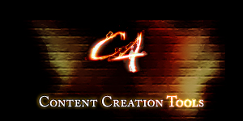

Template:Content Creation Programs
From C4 Engine Wiki
Jump to:
navigation
,
search
Content Creation Tools

Index
Autodesk 3ds Max
Autodesk Maya
Autodesk MotionBuilder
Softimage XSI
Carrara
DAZ Studio
Milkshape 3D
Blender 3D
Caligari TrueSpace
Cinema 4D
Cheetah 3D
Houdini Escape
Wings 3D
DeleD
Poser Pro
modo
LightWave 3D
Ultimate Unwrap 3D
See also
Collada Plugins
Views
Template
Discussion
View source
History
Personal tools
46.53.162.27
Talk for this IP
Log in
Navigation
Main Page
All Pages
Sandbox
Search
Toolbox
What links here
Related changes
Upload file
Special pages
Printable version
Permanent link